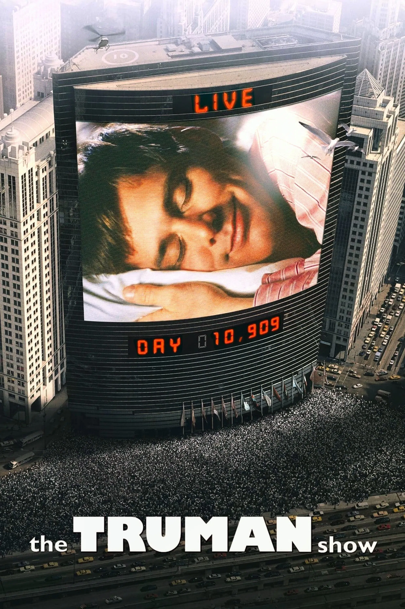
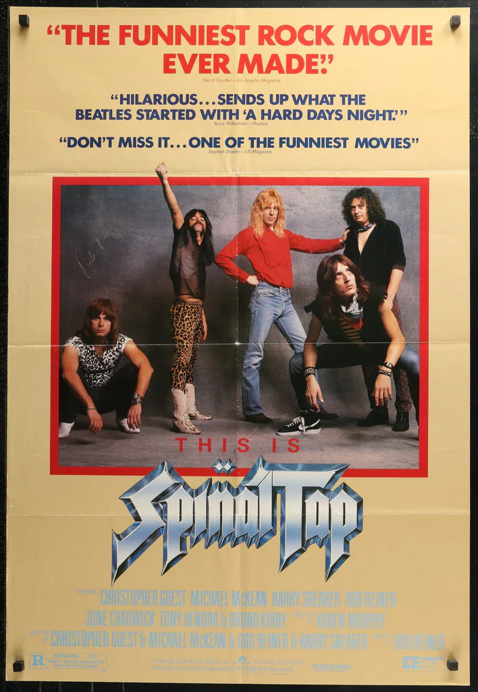

Top 5 más populares
- Back to the Future (1989-1998) - ★★★★★
- The Truman Show (1998) - ★★★★★
- Spinal Tab (1984) - ★★★★☆
- The Incredibles (2004) - ★★★★★
- Monty Python's Life of Brian (1979) - ★★★★★
Géneros disponibles
- Acción y Aventura
- Comedia
- Animación
- Ciencia Ficción
Películas Favoritas
- Back to the Future
- Director: Robert Zemeckis
- Año: 1985
- Género: Ciencia Ficción
- Duración: 166 min
- The Truman Show 
- Director: Peter Weir
- Año: 1998
- Género: Comedia Dramática/Ciencia Ficción
- Duración: 103 min
- Spinal Tab 
- Director: Rob Reiner
- Año: 1984
- Género: Comedia/Documental Falso
- Duración: 82 min
- The Incredibles
- Director: Michael Giacchino
- Año: 2004
- Género: Animación/Superhéroes
- Duración: 115 min
- Monty Python's Life of Brian
- Director: Terry Jones
- Año: 1979
- Género: Comedia
- Duración: 93 min

El adolescente Marty McFly es amigo de Doc, un científico al que todos toman por loco. Cuando Doc crea una máquina para viajar en el tiempo, un error fortuito hace que Marty llegue a 1955, año en el que sus futuros padres aún no se habían conocido. Después de impedir su primer encuentro, deberá conseguir que se conozcan y se casen; de lo contrario, su existencia no sería posible.
Trailer
Tema Principal
Truman Burbank es un hombre corriente y algo ingenuo que ha vivido toda su vida en uno de esos pueblos donde nunca pasa nada. Sin embargo, de repente, unos extraños sucesos le hacen sospechar que algo anormal está ocurriendo. Todos sus amigos son actores, toda su ciudad es un plató, toda su vida está siendo filmada y emitida como el reality más ambicioso de la historia.
Trailer:
Soundtrack:
El grupo de “hard-rock” británico Spinal Tap hace furor. Los tres jóvenes y fogosos músicos de esta ruidosa formación vuelven locas a las chicas y llenan las salas en cada concierto. El reportero Marty DiBergi, quien los descubrió y lanzó a la fama, toma su cámara para filmar su gira. Una gira que no será como las otras…
Trailer:
Soundtrack:

Bob Parr era uno de los más grandes superhéroes del mundo (también se le conocía como "Mr. Increíble"), salvaba vidas y luchaba contra villanos a diario. Han pasado 15 años, y Bob y su mujer (una famosa ex-superheroína por derecho propio) han adoptado una identidad civil y se han retirado a la periferia para llevar una vida normal con sus tres hijos. Bob se dedica a comprobar los plazos de las reclamaciones de seguros y lucha contra el aburrimiento y los michelines. Está deseando volver a entrar en acción, así que cuando recibe una misteriosa comunicación que le ordena dirigirse a una remota isla para cumplir una misión de alto secreto, no se lo piensa dos veces.
Trailer:
Soundtrack:

Brian nace en un pesebre de Belén el mismo día que Jesucristo. Un cúmulo de desgraciados y tronchantes equívocos le harán llevar una vida paralela a la del verdadero Hijo de Dios. Sus pocas luces y el ambiente de decadencia y caos absoluto en que se haya sumergida la Galilea de aquellos días, le harán vivir en manos de su madre, de una feminista revolucionaria y del mismísimo Poncio Pilatos, su propia versión del calvario.